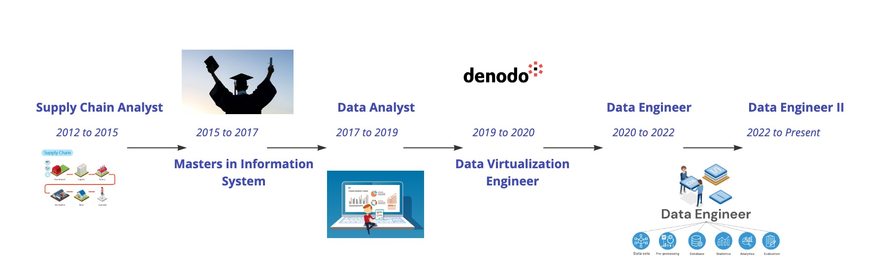

I am Vinod Raaghav Sekar, a seasoned data engineer with 7 years of experience specializing in data analytics, data virtualization, data warehousing, and building data pipelines on cloud platforms. My expertise spans across Azure Databricks, AWS, Denodo (Data Virtualization) )and I am proficient in delivering scalable, secure and efficient data solutions. I also hold a Master's degree in Information Systems from the University of Texas at Arlington along with various certifications showcasing my expertise in Cloud, Data Engineering and AI.
I started my career after graduating with a bachelors in Automotive Engineering from Anna University(Chennai, India) in the year 2012 as a Supply chain analyst at Hwashin Automotive. I was resposible for Raw Material planning, managing raw material warehouse and other supply chain operations. At Hwashin I had the opportunity to explore into SAP which subsequently led me to pursue my Master's in Information systems from University of Texas at Arlington in the year 2015. I graduated from University of Texas at Arlington in the 2017 with a Master's degree in Information Systems and joined National Auto Parts as a Data Analyst. At NAP I developed a price forcating model which forecast the optimum price of all Auto components at NAP warehouse, this price forecsting model was a standout feature as it attracted many thousands of customer to NAP to purchase auto companonents. It helped the organization to improve sales by 300% in a single year and also improved customer retention by 85%. after successful deployment of the pricing model I went above my role definition at NAP to build a customer frinendly chatbot to help customer answer trivial questions such as inventory details, item price, manufacturer details etc.
My passion for Tech combined with my enthusiasm to learn new technologies led me to a career in Data Engineering in the year 2019. I was introduced to Denodo a Data virtulization technology which is used to integrate data from disparate data sources and feed data to BI, web applications or AIML etc in the year 2019. I worked for different organizations as a Data Virtulzation specialist implementing end to end DV solutions starting from Installation of the software in server to deploying REST and SOAP API's.
In 2021 I joined Wavicle Data solutions as Data Engineer and at Wavicle I transitioned from a Data Virtulization engineer to Big data engineer working big data tech stack which involved AWS, Databricks and Apache Airflow I was provided with an opportunity at Wavicle to work on cloud migration project for the client Pilot Flying J in Tennessee which involved converting hundreds of Netezza scripts to pyspark scripts and storing data in AWS S3 as opposed to storing data on-prem.
Programming has been the core of all my skills.I possess advanced profieciency in Python, SQL, PySpark, HTML, CSS, JavaScript, Flask, Matplotlib and Pandas. The developer and engineer in me propelled me to kickstart my AI journey, I am more curious about text analytics, Vision analytics. With multiple AI certifications gained through IBM and Azure, I gained AI developer skills to build secure and high performing AI solutions.
At present I work for TD Bank (TD Insurance) as Data Engineer II building data pipelines for TD Insurance Credit Protection Application tools. I was also part of a very successful cloud migration project of the bank. At TD I gained expertise in Azure Databricks, Azure data factory, Azure synapse and on-prem bigdata systems such as Hive.